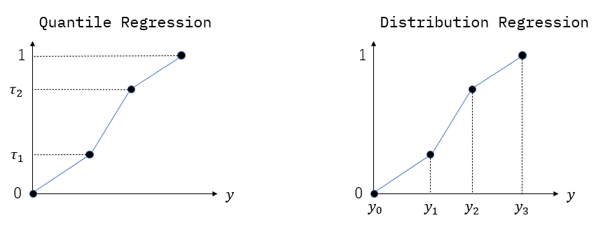

Predicting Probability Distribution
In this toolkit, a probability distribution is represented as a discretized cumulative distribution function (CDF).
Quantile Regression and Distribution Regression
There are two types of discretization of a CDF \(\tau=F(y|x)\). In quantile regression, we discretize a CDF along with \(\tau\)-axis, and a CDF is represented as a set of values \(F^{-1}(\tau|x)\) for various \(\tau\). In distribution regression, we discretize a CDF along with \(y\)-axis, and a CDF is represented as a set of values \(F(y|x)\) for various \(y\). In this toolkit, the “knots” of a CDF correspond to the vertices in the following figure.
{kind=link}
Package dqs.torch.distribution
The classes in package dqs.torch.distribution are used to translate the output of a neural network to a CDF. In quantile regression, a class in this package stores the quantile levels \(\{\tau_{i}\}\) as parameters, and interpret the output of a neural network as values \(\{ F^{-1}(\tau_{i}|x) \}\). In distribution regression, a class in this package stores the boundaries \(\{y_{i}\}\) as parameters, and interpret the output of a neural network as values \(\{ F(y_{i}|x) \}\).